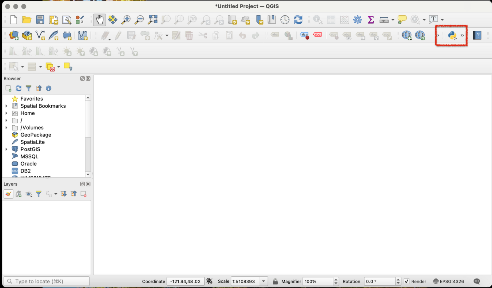
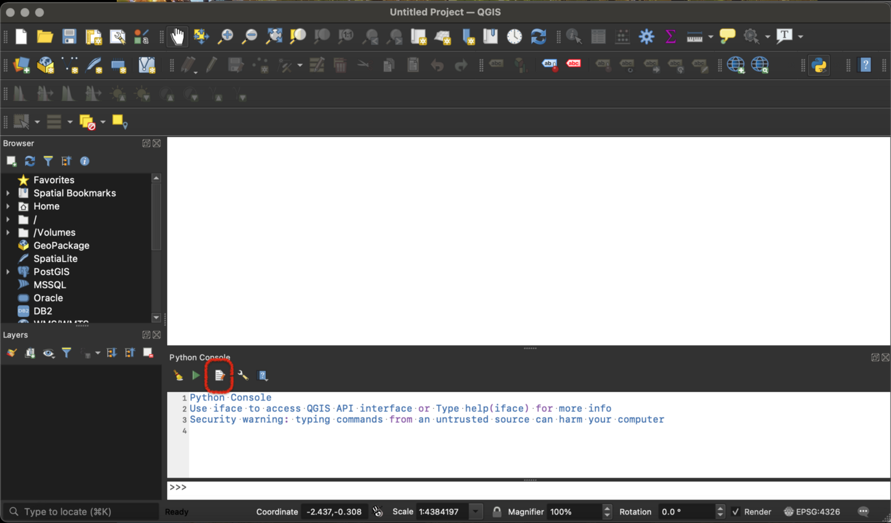
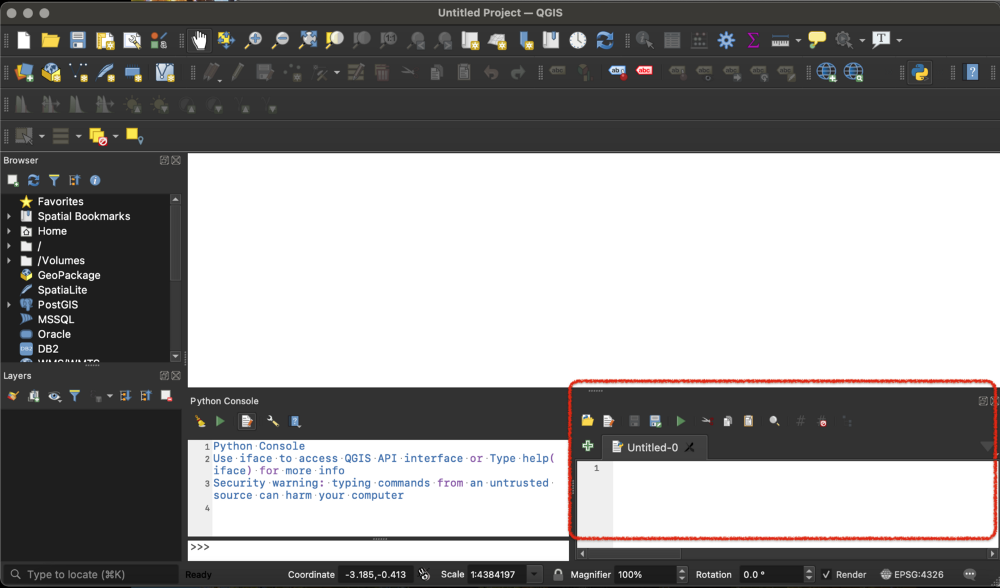
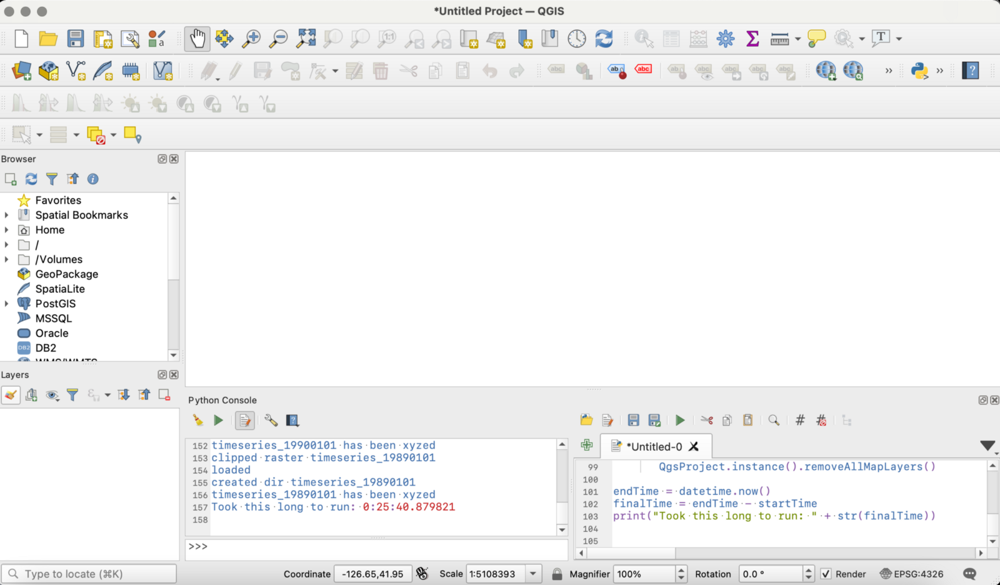

Part 1: https://www.davidjleifer.com/blogs/part1.html
Part 2: https://www.davidjleifer.com/blogs/part2.html
Part 3: https://www.davidjleifer.com/blogs/part3.html
Part 4: https://www.davidjleifer.com/blogs/part4.html
Part 6: https://www.davidjleifer.com/blogs/part6.html
Part 7: https://www.davidjleifer.com/blogs/part7.html
Part 8: https://www.davidjleifer.com/blogs/part8.html
Part 9: https://www.davidjleifer.com/blogs/part9.html
Part 10: https://www.davidjleifer.com/blogs/part10.html
Part 11: https://www.davidjleifer.com/blogs/part11.html
Part 12: https://www.davidjleifer.com/blogs/part12.html
Part 13: https://www.davidjleifer.com/blogs/part13.html
Part 14: https://www.davidjleifer.com/blogs/part14.html
What we originally set out to find in Part 4 was whether a map tile would be faster than a WMS hosted on Geoserver. And we made a bold claim in Part 4, without any backing data. We said that our map tiled Leaflet map app ran faster than the GeoServer hosted WMS OpenLayers map app. Is this true?
Before we can get into any of that, we should really rewrite our Leaflet map from Part 4 with OpenLayers and include some sort of timeseries slider, similar to what is going on in the GeoServer hosted WMS. This method requires NPM (a JavaScript Package Manager) and Node.JS. As long as we are standardizing things, we might as well modify the original timeseries app from Part 1, Part 2, and Part 3 to use NPM. That way it can be more map tile file vs GeoServer WMS and not if Leaflet or OpenLayers is quicker.
How to Execute Scripts for Python QGIS 3
Before we get to the fun web development part, we need to process the data. Someone on reddit commented on Part 4 asking how they would convert a directory of 1600 tif files into XYZ tile Directories. Luckily there is PyQGIS for QGIS 3. We will be executing scripts from the Python console in QGIS 3 (you need QGIS 3 installed to participate).
Open QGIS3 and create a new project. Click on the Python console button, as shown below in the red box:

Then we need to click the “Show Editor” button shown in red circle.

Ignore the dark theme change! The screen will then look like this, we will be pasting the script into the editor and clicking “run” to execute the python code.

Installing a Memory Profiler
Now we will use this GIS Stack Exchange to discover your QGIS version’s Python Path and install a package “guppy3" for QGIS Python: https://gis.stackexchange.com/questions/351280/installing-python-modules-for-qgis-3-on-mac
Installing on Windows
If you’re on Windows, install using OSGeo4W plugin: https://landscapearchaeology.org/2018/installing-python-packages-in-qgis-3-for-windows/
Installing on Mac
If on mac, enter this command in the QGIS Python Shell:
import sysprint(sys.executable)
If this outputs the following path (QGIS versions before 3.10 I think), you should be able to install directly there:
/usr/local/bin/python3.6After QGIS 3.10 I think it will output something like this:
/Applications/QGIS.app/Contents/MacOS/QGIS
So go to that “MacOS” location in your folder GUI (or in Terminal). Go into the “bin” folder and you should see a “python3.X” (mine is “python3.7”). Copy that path and paste it into this command in your terminal:
/Applications/QGIS.app/Contents/MacOS/bin/python3.7 -m pip install guppy3
Restart QGIS and it should have installed the guppy3 package. To be for true, enter the library into the Python console:
from guppy import hpy
Downloading the Data
Download this .zip file of the folder directory: https://drive.google.com/file/d/1Ft2YuB6bzmb9rgcBXFjC_g5RPqHqkMRY/view?usp=sharing
It is a directory of 39 tif files of US gridded precipitation data split into 4 directories and some other folders for our inputs and outputs. Unzip in a folder of your choice, we will need the path of this directory to modify the inputs and outputs in the python script. The entire script will be posted for easier copy/pasting at the end of this youtube tutorial.
Building the Python Script
First we need to import libraries and set up a timer to see how long our script takes:
import processing
import os
from qgis.core import (
QgsVectorLayer,
QgsProject,
QgsColorRampShader
)
from PyQt5 import QtGui
from glob import glob
from guppy import hpy
#time the script
from datetime import datetime
startTime = datetime.now()Next we need to set our directory and directory list to loop over. The tif files are included in the .zip file that I had you download, so you will need to update the paths to your paths (it is different on windows computer and macintosh computer- this path structure is for mac).
dirs = "/dir/" #replace this with your path list_of_dirs = glob(dirs + "*/")
We will then set up the first loop of our nested “for” loop. We also make a list of the first directory of tifs to loop over.
for j in list_of_dirs: dir_of_tiffs = j all_files = glob(os.path.join(dir_of_tiffs, "*.tif"))
The actual nested “for” loop part is then created to loop over the list of tifs we set as a variable named “all_files” in the previous code block. We use the “os” lib to get the file name and “[:-4]” to strip off the “.tif” part of the string.
#notice the nest
for i in all_files:
#get basename of each tif
tiff_basename = os.path.basename(i)
#strip .tif off the i variable
i = tiff_basename[:-4]We then set up some variables to use in the “gdal:cliprasterbymasklayer” processing tool. The string variable “tif” is set to “.tif”. The “path_to_tif” variable is set to a string concatenation of the dir_of_tiffs variable (which is the path to the data in dir1, dir2, dir3, dir4), and the variable “i” (created as a tif file name without the path or .tif extension). The variable “OR_shp” is set to the shapefile of Oregon. This will be used to clip the list of US raster tifs in the dir1, dir2, dir3, dir 4 folder. The variable “clipped_OR_tifs” is the output destination of the raster clip tool and is a string concatenation of the folders path, the variable “i”, and the .tif extension string we set as “.tif”.
#still nested
#path to raster for each i
tif = ".tif"
path_to_tif = dir_of_tiffs + i + tif
#path to OR shp
OR_shp = "/cb_2018_us_state_20m/oregon.shp"
#path to output dir of clipped OR tiffs
clipped_OR_tifs = "/clipped_OR_tifs/" + i + tifThen we run the processing algorithm “gdal:cliprasterbymasklayer”. You can look more for an explanation in the docs: https://docs.qgis.org/3.16/en/docs/user_manual/processing_algs/gdal/rasterextraction.html.
#nested
processing.run('gdal:cliprasterbymasklayer',{
'INPUT': path_to_tif,
'MASK': OR_shp,
'NODATA': -1,
'ALPHA_BAND': False,
'CROP_TO_CUTLINE': True,
'KEEP_RESOLUTION': True,
'OPTIONS': "",
'DATA_TYPE': 0,
'OUTPUT': clipped_OR_tifs
})
print("clipped raster " + i)Now we need to create the layer so we can add some style to our tiffs. This is accomplished by using the “QgsRasterLayer” tool on the OUTPUT variable “clipped_OR_tiles” from the clipping in the last code block. We also name the layer with the variable “i”, which is our tif base name (eg: “timeseries_19840101”). We also test it with an “if/else” to see if the file loaded correctly.
#create layer (still nested)
rlayer = QgsRasterLayer(clipped_OR_tifs, i)
if rlayer.isValid():
print("loaded")
else:
print("failed to load")We need to use some more assistance from libraries. Create a raster shader and ramp shader to define a color ramp.
#raster shader and ramp shader objects
s = QgsRasterShader()
c = QgsColorRampShader()
c.setColorRampType(QgsColorRampShader.Interpolated)Then we make a list to hold the color ramp definition and append the “QgsColorRampShader.ColorRampItem” to the list.
#list to hold color ramp definition and append values
j = []
j.append(QgsColorRampShader.ColorRampItem(0, QtGui.QColor("#f7fbff"), "0"))
j.append(QgsColorRampShader.ColorRampItem(105, QtGui.QColor("#deebf7"), "105"))
j.append(QgsColorRampShader.ColorRampItem(210, QtGui.QColor("#c6dbef"), "210"))
j.append(QgsColorRampShader.ColorRampItem(315, QtGui.QColor("#9ecae1"), "315"))
j.append(QgsColorRampShader.ColorRampItem(420, QtGui.QColor("#6baed6"), "420"))
j.append(QgsColorRampShader.ColorRampItem(525, QtGui.QColor("#4292c6"), "525"))
j.append(QgsColorRampShader.ColorRampItem(630, QtGui.QColor("#2171b5"), "630"))
j.append(QgsColorRampShader.ColorRampItem(735, QtGui.QColor("#08519c"), "735"))
j.append(QgsColorRampShader.ColorRampItem(840, QtGui.QColor("#08306b"), "840"))Next we do a whole bunch of nerd stuff with color shading and actually add the layer to QGIS3. I know what you’re saying. “Won’t that slow this whole thing down?” You are correct. But the “qgis:tilesxyzdirectory” algorithm we are about to run requires the input to be the extent of a map in QGIS3, not an actual input file. So we have to add the clipped tif to the map. Not to worry! We clear the all map layers after every tif at the end of nested “for” loop, so it can run on my beat up mbp.
#assign color ramp and use raster shaders color ramp
c.setColorRampItemList(j)
s.setRasterShaderFunction(c)
#raster renter object, asign renderer to layer, add to map
ps = QgsSingleBandPseudoColorRenderer(rlayer.dataProvider(), 1, s)
rlayer.setRenderer(ps)
QgsProject.instance().addMapLayer(rlayer)We then set up the input and output directory locations. Yours will look different, but I have them set to output in “/data2/”. We also make a new directory to hold each tile file: “output_dir”.
#setup html file output
output_dir = "/data2/" + i
html = ".html"
output_html = "/data2/" + i + html
#make dir to hold each tile file
os.mkdir(output_dir)
print("created dir " + i)We then run the “qgis:tilesxyzdirectory” algorithm to convert our data into map tiles.
#run qgis:tilesxyzdirectory processing algorithm
processing.run("qgis:tilesxyzdirectory", {'EXTENT': '-124.520833333,-116.479166666,42.020833333,46.229166667 [EPSG:4269]',
'ZOOM_MIN': 1,
'ZOOM_MAX': 12,
'DPI': 96,
'TILE_FORMAT': 0,
'TILE_WIDTH': 256,
'TILE_HEIGHT': 256,
'OUTPUT_DIRECTORY': output_dir,
'OUTPUT_HTML': output_html
})
print(i + " has been xyzed")Next we will remove the layer and go back to the start of the loop until there are no more files to loop over and no more directories to loop over.
#remove layers and start over
QgsProject.instance().removeAllMapLayers()After each directory finishes, we will write a log file containing memory usage information.
#memory profiler
#memory profiler
h = hpy()
heap_output = str(h.heap())
txt = ".txt"
today = datetime.now().strftime("%Y%m%d%H%M%S")
dirTime = str(today)
log_file = dirs + dirTime + txt
with open(log_file, "w") as text_file:
text_file.write(heap_output)Final step is to print our script completion time and add a final log file, as a sort of sanity check.
#I Know the end
endTime = datetime.now()
finalTime = endTime - startTime
finalTimeStr = "Took this long to run: " + str(finalTime)
print(finalTimeStr)
h = hpy()
heap_output = str(h.heap())
log_file = "/dir/final_log.txt"
with open(log_file, "w") as text_file:
text_file.write(heap_output)
text_file.write('\n' + finalTimeStr)Modify the paths, then copy/paste the whole thing into QGIS Python Editor and click the “run” button.
Final Python Script
import processing
import os
from qgis.core import (
QgsVectorLayer,
QgsProject,
QgsColorRampShader
)
from PyQt5 import QtGui
from glob import glob
from guppy import hpy
#time the script
from datetime import datetime
startTime = datetime.now()
#coloring from:
#https://www.gislounge.com/symbolizing-vector-and-raster-layers-qgis-python-programming-cookbook/
dirs = "/dir/"
list_of_dirs = glob(dirs + "*/")
for j in list_of_dirs:
dir_of_tiffs = j
all_files = glob(os.path.join(dir_of_tiffs, "*.tif"))
for i in all_files:
#get basename of each tif
tiff_basename = os.path.basename(i)
#strip .tif off the i variable
i = tiff_basename[:-4]
#path to raster for each i
tif = ".tif"
path_to_tif = dir_of_tiffs + i + tif
#path to OR shp
OR_shp = "/cb_2018_us_state_20m/oregon.shp"
#path to output dir of clipped OR tiffs
clipped_OR_tifs = "/clipped_OR_tifs/" + i + tif
#clip the raster with OR shapefile
processing.run('gdal:cliprasterbymasklayer',{'INPUT': path_to_tif,
'MASK': OR_shp,
'NODATA': -1,
'ALPHA_BAND': False,
'CROP_TO_CUTLINE': True,
'KEEP_RESOLUTION': True,
'OPTIONS': "",
'DATA_TYPE': 0,
'OUTPUT': clipped_OR_tifs
})
print("clipped raster " + i)
#create layer
rlayer = QgsRasterLayer(clipped_OR_tifs, i)
if rlayer.isValid():
print("loaded")
else:
print("failed to load")
#raster shader and ramp shader objects
s = QgsRasterShader()
c = QgsColorRampShader()
c.setColorRampType(QgsColorRampShader.Interpolated)
#list to hold color ramp definition and append color ramp values
j = []
j.append(QgsColorRampShader.ColorRampItem(0, QtGui.QColor("#f7fbff"), "0"))
j.append(QgsColorRampShader.ColorRampItem(105, QtGui.QColor("#deebf7"), "105"))
j.append(QgsColorRampShader.ColorRampItem(210, QtGui.QColor("#c6dbef"), "210"))
j.append(QgsColorRampShader.ColorRampItem(315, QtGui.QColor("#9ecae1"), "315"))
j.append(QgsColorRampShader.ColorRampItem(420, QtGui.QColor("#6baed6"), "420"))
j.append(QgsColorRampShader.ColorRampItem(525, QtGui.QColor("#4292c6"), "525"))
j.append(QgsColorRampShader.ColorRampItem(630, QtGui.QColor("#2171b5"), "630"))
j.append(QgsColorRampShader.ColorRampItem(735, QtGui.QColor("#08519c"), "735"))
j.append(QgsColorRampShader.ColorRampItem(840, QtGui.QColor("#08306b"), "840"))
#assign color ramp and use raster shaders color ramp
c.setColorRampItemList(j)
s.setRasterShaderFunction(c)
#raster renter object, asign renderer to layer, add to map
ps = QgsSingleBandPseudoColorRenderer(rlayer.dataProvider(), 1, s)
rlayer.setRenderer(ps)
QgsProject.instance().addMapLayer(rlayer)
#setup html file output
output_dir = "/data2/" + i
html = ".html"
output_html = "/Users/davidleifer/Documents/20170101-20190604/Geog531/Assignment2/data/oregon/mapTiled/npm-maptile/data2/" + i + html
#make dir to hold each tile file
os.mkdir(output_dir)
print("created dir " + i)
#run qgis:tilesxyzdirectory processing algorithm
processing.run("qgis:tilesxyzdirectory", {'EXTENT': '-124.520833333,-116.479166666,42.020833333,46.229166667 [EPSG:4269]',
'ZOOM_MIN': 1,
'ZOOM_MAX': 12,
'DPI': 96,
'TILE_FORMAT': 0,
'TILE_WIDTH': 256,
'TILE_HEIGHT': 256,
'OUTPUT_DIRECTORY': output_dir,
'OUTPUT_HTML': output_html
})
print(i + " has been xyzed")
#remove layers and start over
QgsProject.instance().removeAllMapLayers()
#memory profiler
#memory profiler
h = hpy()
heap_output = str(h.heap())
txt = ".txt"
today = datetime.now().strftime("%Y%m%d%H%M%S")
dirTime = str(today)
log_file = dirs + dirTime + txt
with open(log_file, "w") as text_file:
text_file.write(heap_output)
#I Know the End
endTime = datetime.now()
finalTime = endTime - startTime
finalTimeStr = "Took this long to run: " + str(finalTime)
print(finalTimeStr)
h = hpy()
heap_output = str(h.heap())
log_file = "/dir/final_log.txt"
with open(log_file, "w") as text_file:
text_file.write(heap_output)
text_file.write('\n' + finalTimeStr)
It took almost 26 minutes to do 38 tif files.
For 1600 files:
1600/38 = 42.1052631579
42.1052631579 X 26 = 1094.73684211
1094.73684211 / 60 = 18.2456140351
About 18.25 hours. Yikes. Maybe you’d have to do it in batches so as not to overwhelm the computer’s memory too. QGIS apparently is limited to 4GB of RAM? Is this true? I could only find an 8 month old GIS StackExchange on the subject.
The directory size of the 38 XYZ tiles is also 1.34 GB on disk, which explains why it took so long. Just copying the folders took my mbp 25–30 minutes. For comparison, one tif file is 78 KB and a map tile directory is 35 MB.
Heres the final memory log:
Partition of a set of 465299 objects. Total size = 60628997 bytes.
Index Count % Size % Cumulative % Kind (class / dict of class)
0 120197 26 13754841 23 13754841 23 unicode
1 82295 18 7471424 12 21226265 35 tuple
2 2880 1 3600424 6 24826689 41 dict of sip.wrappertype
3 54421 12 3482944 6 28309633 47 sip.methoddescriptor
4 2880 1 3070808 5 31380441 52 sip.wrappertype
5 20313 4 2925072 5 34305513 57 function
6 35751 8 2830132 5 37135645 61 bytes
7 18140 4 2618672 4 39754317 66 types.CodeType
8 2672 1 2558136 4 42312453 70 type
9 3909 1 2051464 3 44363917 73 dict (no owner)
<2250 more rows. Type e.g. '_.more' to view.>
Took this long to run: 0:08:45.331280https://cloud.google.com/nodejs/docs/setup
https://github.com/nvm-sh/nvm#installation
Crack open a COCI COLI and check out the rest of this series:
Part 1: https://www.davidjleifer.com/blogs/part1.html
Part 2: https://www.davidjleifer.com/blogs/part2.html
Part 3: https://www.davidjleifer.com/blogs/part3.html
Part 4: https://www.davidjleifer.com/blogs/part4.html
Part 6: https://www.davidjleifer.com/blogs/part6.html
Part 7: https://www.davidjleifer.com/blogs/part7.html
Part 8: https://www.davidjleifer.com/blogs/part8.html
Part 9: https://www.davidjleifer.com/blogs/part9.html
Part 10: https://www.davidjleifer.com/blogs/part10.html
Part 11: https://www.davidjleifer.com/blogs/part11.html
Part 12: https://www.davidjleifer.com/blogs/part12.html